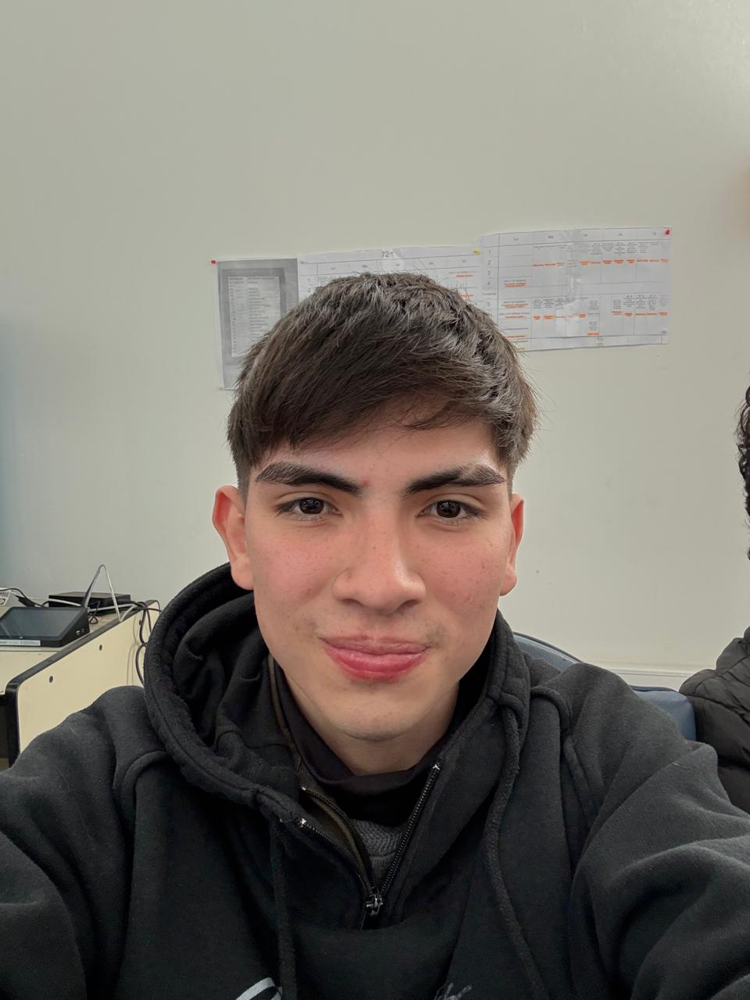
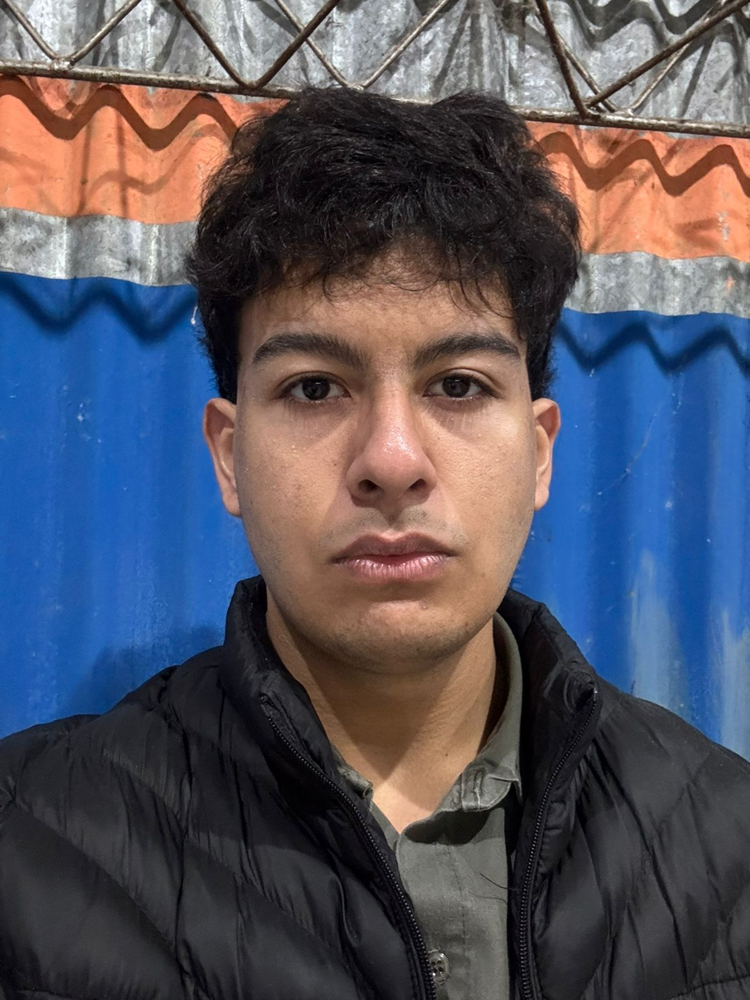

Nuestro Equipo
Profesionales comprometidos con la inclusión

BIANCO, Tomás Martín
Ingeniería Electrónica

BRITEZ, Luis
Desarrollo de Software

RAMÍREZ TOLOSA, Santino Rafael
Diseño de Producto
SOMOZA, Juan Cruz Ariel
Investigación en Neurociencias